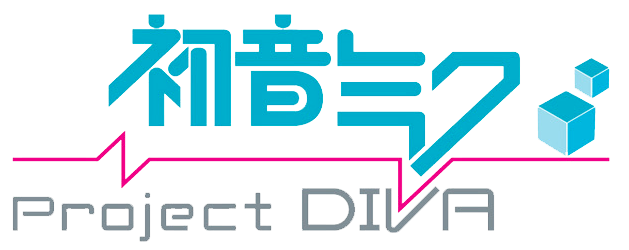

The Games
Main Series
| Title | Release date | Console | English Translation |
|---|---|---|---|
| Hatsune Miku: Project DIVA | July 2, 2009 | PSP | No |
| Hatsune Miku: Project DIVA Arcade | June 23, 2010 | Arcade | |
| Hatsune Miku: Project DIVA 2nd | July 29, 2010 | PSP | |
| Hatsune Miku: Project DIVA Extend | November 10, 2011 | ||
| Hatsune Miku: Project DIVA F | August 30, 2012 (PS Vita) March 7, 2013 (PS3) |
PS Vita PS3 |
Yes |
| Hatsune Miku: Project Arcade Future Tone | November 21, 2013 | Arcade | No |
| Hatsune Miku: Project DIVA F 2nd | March 27, 2014 | PS Vita PS3 |
Yes |
| Hatsune Miku: Project DIVA X | August 31, 2015 (PS Vita) August 25, 2016 (PS4) August 30, 2016 (English PS4 and Vita) |
PS Vita PS4 |
|
| Hatsune Miku: Project DIVA Future Tone | June 23, 2016 (Japanese) January 10, 2017 (English) |
PS4 | |
| Hatsune Miku: Project DIVA Megamix (Mega39s in Japan) | February 13, 2020 (Japanese) May 15, 2020 (English) |
Nintendo Switch |
- Hatsune Miku: Project DIVA, DIVA Arcade, and DIVA 2nd
- Not in English I don't have an easy way to play them and they aren't nearly as good as the later games
- 4/10
- Hatsune Miku: Project DIVA Extend
- Was just DIVA 2nd rereleased with some extra content. Still has the unrefined gameplay of the original and is still not in English without fan translation patches
- 3/10
- Hatsune Miku: Project DIVA F
- This is where the series gets good. The gameplay was much improved from the original PSP games. The timing works much better and the game just feels like everything is going faster which with rhythm games quick gameplay is great. Also had an online mode where people could create their own charts with custom music for others to play fantastic and lots of fun
- 8/10
- Hatsune Miku: Project DIVA Arcade Future Tone
- Changed the gameplay completely by adding a touch slider that you have to swipe on in certain directions for notes and added having to press multiple buttons at once. It also has over 200 songs. It is only officially available in arcades but because thsese arcade machines run Windows it is possible to run the game on standard PCs through a program called PD Loader. Because it can be played on PC and be easily modded with custom songs, charts, and other stuff it is the best way to play the game to me
- 10/10
- Hatsune Miku: Project DIVA F 2nd
- Refined the gameplay slightly from F and improved the timing a bit so hitting buttons at the right time was a bit easier. Had better songs than F and still had the fantastic online edit mode
- 9/10
- Hatsune Miku: Project DIVA X
- X is ehh. It was the last game to use the old gameplay from before AFT (Arcade Future Tone). It was also the last DIVA game on the PS Vita. It also went for a different style with a story mode that was not too good. Although it had all these weak points it had some of the best songs ever in the series and none of them have ever been added into later games
- 6.5/10
- Hatsune Miku: Project DIVA Future Tone
- Just a port of AFT to the PS4 but because it isn't on PC it can't be easily modded
- 8/10
- Hatsune Miku: Project DIVA Megamix (Mega39s in Japan)
- Port of Future Tone to the switch but they cut out half the songs and added like 20 new ones. To make up for removing half the game they added a new gamemode with motion controls that is pretty fun but a lot of people don't like it. It's the only way to play a Project DIVA game in the Future Tone style of gameplay portably
- 7/10
- Honorable Mention: Miracle Girls Festival
- Miracles Girls Festival is a 2015 rhythm game for the PS Vita consisting of music from numerous slice of life animes including YuruYuri, Kin-iro Mosaic, Engaged to the Unidentifed and more. It is based off of the Project DIVA F and F 2nd game engine and has nearly identical gameplay. This is the only spin off title I will be mentioning because I really like these animes and I haven't played any of the others.
- 7/10